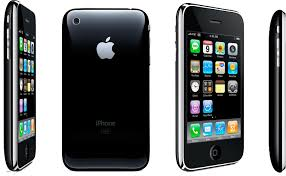

2010 - Internet Móvil
La Revolución de los Smartphones

Smartphones - Internet en tu bolsillo, siempre conectado
La Era Móvil
Alrededor de 2010, el acceso a Internet experimentó su transformación más significativa:
de las computadoras de escritorio a los smartphones. Los teléfonos inteligentes
pusieron el poder de Internet en el bolsillo de miles de millones de personas, permitiendo
conectividad permanente y ubicua. Internet dejó de ser algo que "usabas"
para convertirse en algo en lo que "vivías".
📱 Internet en Tu Bolsillo
De sentado frente a una PC a conectado 24/7
El smartphone: la computadora más personal
|
El iPhone: El Catalizador
Aunque no fue el primer smartphone, el iPhone de Apple (lanzado en 2007)
revolucionó la industria. Steve Jobs lo presentó como "tres productos revolucionarios en uno":
un iPod de pantalla ancha, un teléfono revolucionario y un dispositivo de Internet.
Para 2010, el iPhone y sus competidores habían transformado completamente el mercado móvil.
Características Revolucionarias del iPhone Original (2007):
- Pantalla táctil capacitiva: Adiós a los botones físicos y stylus
- Interfaz intuitiva: Multitouch, gestos naturales (pellizcar, deslizar)
- Navegador web completo: Safari móvil mostraba sitios web reales
- App Store (2008): Ecosistema de aplicaciones de terceros
- Sensor de orientación: La pantalla rota automáticamente
|
Frase histórica: Steve Jobs dijo en el lanzamiento del iPhone:
"Hoy Apple reinventa el teléfono". Tenía razón: el iPhone no solo
cambió los teléfonos, cambió cómo vivimos.
|
Android: Democratizando los Smartphones
Google lanzó Android en 2008 como sistema operativo de código abierto.
Múltiples fabricantes (Samsung, HTC, Motorola, LG) podían usar Android, lo que llevó a una
explosión de opciones de smartphones a diferentes precios. Para 2010, Android se había
convertido en un competidor serio del iPhone.
| iOS (Apple) |
Android (Google) |
- Lanzamiento: 2007
- Sistema cerrado (solo Apple)
- Hardware premium
- Ecosistema integrado
- App Store curada
- Experiencia consistente
|
- Lanzamiento: 2008
- Código abierto (múltiples fabricantes)
- Variedad de precios
- Personalizable
- Google Play más abierto
- Mayor variedad de dispositivos
|
El Crecimiento Explosivo
Entre 2007 y 2010, los smartphones pasaron de ser un lujo para ejecutivos a estar en manos
de cientos de millones de personas. El crecimiento fue asombroso:
| Año |
Usuarios de Smartphones |
Hito |
| 2007 |
122 millones |
Lanzamiento del iPhone |
| 2010 |
300 millones |
Boom de Android |
| 2013 |
1 mil millones |
Mil millones de smartphones |
| 2016 |
2 mil millones |
Mayoría usa smartphones |
| 2024 |
6.9+ mil millones |
Más smartphones que computadoras |
El Cambio en el Comportamiento
Los smartphones no solo cambiaron cómo accedemos a Internet, sino
cuándo y dónde lo hacemos:
Antes de los Smartphones:
- Internet solo en computadoras
- Acceso desde casa u oficina
- Sesiones largas y planificadas
- Chequear email 2-3 veces al día
- Cámaras y reproductores de música separados
Con los Smartphones:
- Internet en cualquier lugar
- Acceso 24/7 desde el bolsillo
- Micro-sesiones constantes
- Notificaciones instantáneas
- Todo-en-uno: cámara, música, GPS, comunicación
|
📊 Dato Impactante:
En 2015, por primera vez, más personas accedieron a Internet desde móviles
que desde computadoras. Hoy, más del 60% del tráfico web es móvil.
|
Tecnologías que Impulsaron el Internet Móvil
Varias innovaciones tecnológicas convergieron para hacer posible el Internet móvil:
| Tecnología |
Aporte |
| 3G/4G/LTE |
Conexiones rápidas que permiten video streaming y navegación fluida |
| WiFi |
Conexiones inalámbricas de alta velocidad en lugares públicos |
| GPS |
Servicios basados en ubicación (mapas, Uber, restaurantes cercanos) |
| Pantallas táctiles |
Interfaces intuitivas sin necesidad de teclado físico |
| Sensores |
Acelerómetro, giroscopio, brújula para apps interactivas |
| App Stores |
Ecosistemas de millones de aplicaciones especializadas |
El Ecosistema de Aplicaciones
La App Store de Apple (2008) y Google Play (2008, antes Android Market)
crearon ecosistemas completos de aplicaciones. Cualquier desarrollador podía crear apps y
distribuirlas globalmente.
Categorías de Apps que Transformaron la Vida:
- Comunicación: WhatsApp, Telegram, Signal
- Redes Sociales: Instagram, Snapchat, TikTok
- Transporte: Uber, Lyft, apps de taxis
- Entrega de comida: UberEats, DoorDash, Rappi
- Banca móvil: Pagar con el teléfono
- Salud y fitness: Rastreo de actividad, meditación
- Entretenimiento: Netflix, Spotify, juegos móviles
- Productividad: Email, calendarios, notas
|
💰 Economía de las Apps: En 2023, la economía de aplicaciones móviles
generó más de $935 mil millones de dólares. Millones de desarrolladores
y empresas dependen de las apps para sus ingresos.
|
Impacto Social del Internet Móvil
Los smartphones e Internet móvil han tenido un impacto profundo en la sociedad:
Cambios Positivos:
- Acceso a información: Wikipedia, noticias, educación en el bolsillo
- Inclusión digital: Personas en países en desarrollo acceden a Internet
- Emprendimiento: Economía gig (Uber, freelance, delivery)
- Comunicación instantánea: Conectados con familia y amigos globalmente
- Emergencias: GPS y comunicación en situaciones críticas
Desafíos:
- Adicción: Promedio de 4+ horas diarias en el teléfono
- Distracción: Accidentes por usar el teléfono al conducir/caminar
- Privacidad: Rastreo constante de ubicación y comportamiento
- Salud mental: FOMO (Fear of Missing Out), comparación social
- Sueño interrumpido: Pantallas antes de dormir afectan el descanso
Mobile-First: El Nuevo Paradigma
Para 2010 en adelante, las empresas tuvieron que adoptar una estrategia "mobile-first"
(móvil primero). Ya no se trataba de adaptar sitios de escritorio a móviles, sino de diseñar
pensando primero en móviles.
Ejemplos de Servicios "Mobile-First":
- Instagram: Comenzó solo como app móvil (2010)
- Snapchat: Diseñado exclusivamente para smartphones
- TikTok: Formato vertical optimizado para teléfonos
- WhatsApp: Mensajería pensada para móviles
- Uber: Imposible sin GPS y smartphones
|
🔮 El Futuro:
Con el 5G y eventualmente 6G, el Internet móvil seguirá evolucionando.
Realidad aumentada, vehículos autónomos, ciudades inteligentes: todo depende
de conectividad móvil ultrarrápida y confiable.
|
📚 Enlaces Relacionados
Para más información sobre Internet móvil, consulta:
|